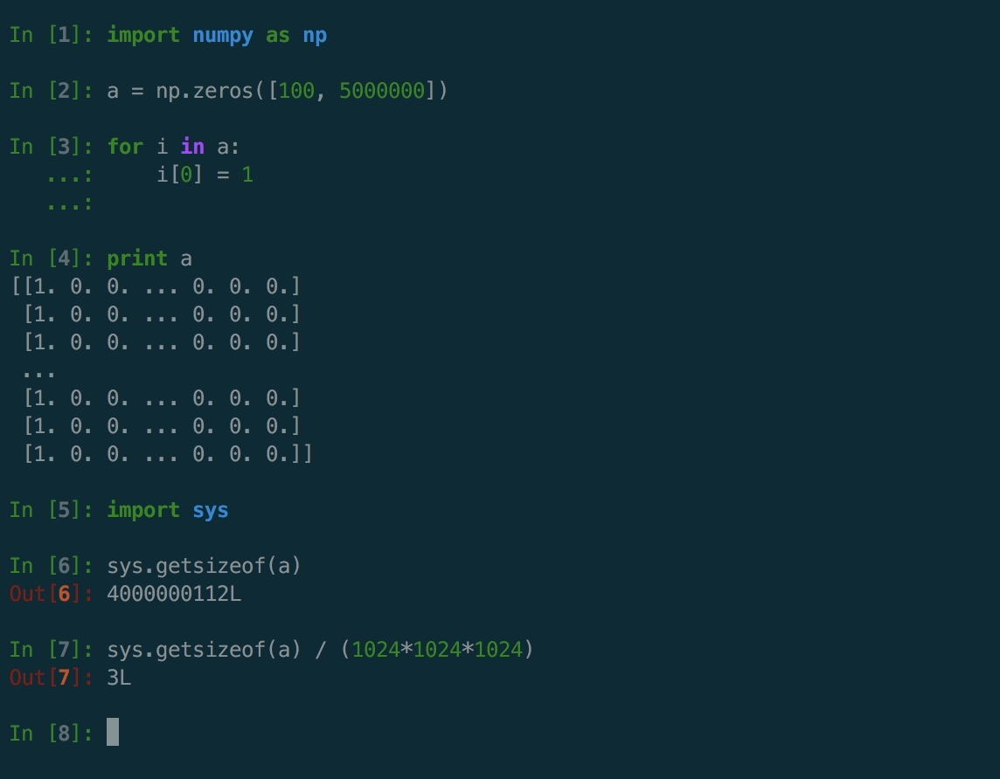
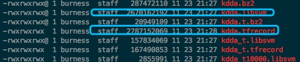
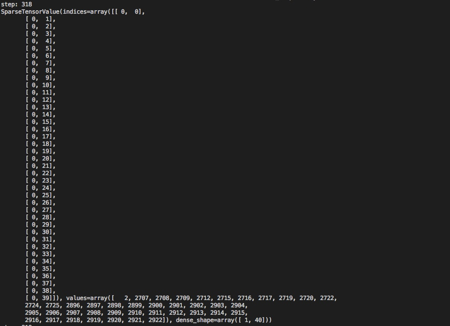
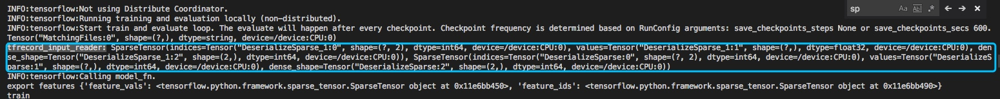
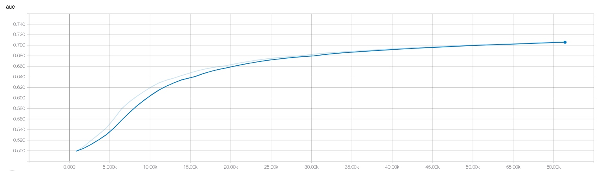
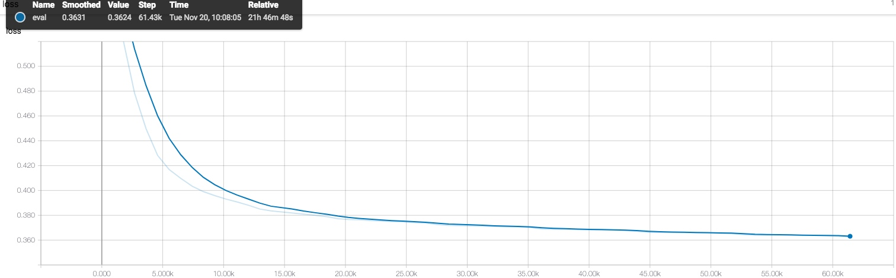
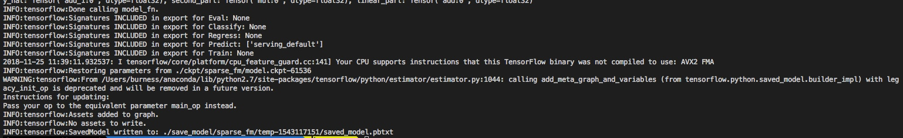
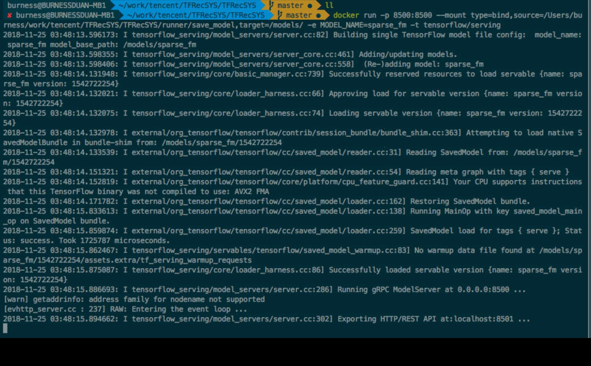
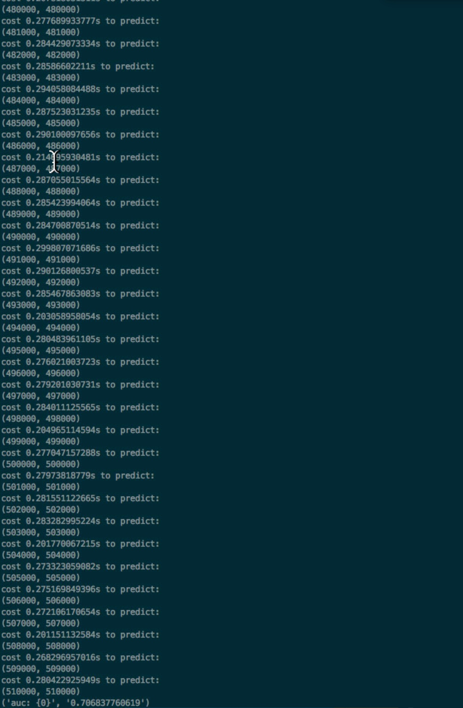

Maybe Best Practice With Sparse Machine Learning In TensorFlow
TensorFlow现状及背景
在机器学习这块，Estimator本身的封装能够适应比较多的Dense的场景，而对于Sparse的场景无论是官方demo还是一些业界的大牛都分享的比较少，在很多场景，比如libfm、libffm、Xgboost都支持直接libsvm, field-libsvm的格式中读入数据，训练模型没有原始的实现，没法直接调包使用，得自己在TensorFlow的框架上构造，所幸Estimator本身的框架支持自定义的input_fn，和自定义的model_fn，笔者过去一段时间工作之余研究了下，并实现了基于libsvm的Sparse Logistic Regression和Sparse Factorization Machine， 打通了从数据读取、模型训练、到TensorFlow Serving的部署。
TensorFlow中的sparse_tensor实现
我们读下sparse_tensor的源码，sparse_tensor.py, 很容易看出来sparse_tensor在TensorFlow中是一个高层的封装，主要包括indices, values, shape三个部分，这里很有意思，后面我实践中遇到一个大坑，可以通过这里解决，这里我先卖个关子；
sparse representation的好处
常见的稀疏矩阵的表示有csc，csr，在很多矩阵计算的库当中有使用，比如python中大家使用比较多的scipy，TensorFlow底层计算模块eigen，都是用类似的方式来表示稀疏矩阵，举个例子比如某个商户有500万个商品，而用户产生行为的商品必定远远小于500万，如果都是用dense表示，那么保存单个用户行为的商品数据需要500万个指，而采用稀疏数据表示则保存所需要的空间只需要和你才产生行为的商品数量有关，如下图100个用户的在500w上的行为数据如果用dense表示需要大概3G的空间；

需要保存100*5000000个int，而使用csc_matrix，
row = np.array(range(100))
col = np.zeros(100)
data = np.ones(100)
csc_matrix((data, (row, col)), shape=(100, 5000000))
我们只需要保存3*NNZ（这里就是100）个int，然后加上一个shape信息，空间占用大大减少；
在内存中，我们通常使用csc来表示Sparse Matrix，而在样本保存中，通常使用libsvm格式来保存
1 1:1 2:1 3:1 4:1 5:1 6:1 7:1 8:0.301 9:0.602 10:1 11:1 12:1 13:1 14:1 15:1 16:1 17:1 18:1 19:1 20:1 21:1 22:1
以空格为sep，label为1， 后续为feature的表示，格式为feature_id: feature_val, 在TensorFlow中我们可以使用TextlineDataset自定义input_fn来解析文本，其他很多相关的技术文章都有提及，但是作为一个程序员总感觉不想走已经走过的路，而且TF官宣tfrecord的读写效率高， 考虑到效率问题，我这里使用TFRecordDataset来做数据的读取；
LibSVM To TFRecord
解析LibSVM feature_ids, 和feature_vals， 很简单没有啥好说的， 直接贴代码，想要深入了解的，可以去看看TF的example.proto, feature.proto, 就大概能了解Example和Feature的逻辑了，不用闷闷地只知道别人是这样写的。
import codecs
import tensorflow as tf
import logging
logger = logging.getLogger("TFRecSYS")
sh = logging.StreamHandler(stream=None)
logger.setLevel(logging.DEBUG)
fmt = "%(asctime)-15s %(levelname)s %(filename)s %(lineno)d %(process)d %(message)s"
datefmt = "%a %d %b %Y %H:%M:%S"
formatter = logging.Formatter(fmt, datefmt)
sh.setFormatter(formatter)
logger.addHandler(sh)
class LibSVM2TFRecord(object):
def __init__(self, libsvm_filenames, tfrecord_filename, info_interval=10000, tfrecord_large_line_num = 10000000):
self.libsvm_filenames = libsvm_filenames
self.tfrecord_filename = tfrecord_filename
self.info_interval = info_interval
self.tfrecord_large_line_num = tfrecord_large_line_num
def set_transform_files(self, libsvm_filenames, tfrecord_filename):
self.libsvm_filenames = libsvm_filenames
self.tfrecord_filename = tfrecord_filename
def fit(self):
logger.info(self.libsvm_filenames)
writer = tf.python_io.TFRecordWriter(self.tfrecord_filename+".tfrecord")
tfrecord_num = 1
for libsvm_filename in self.libsvm_filenames:
logger.info("Begin to process {0}".format(libsvm_filename))
with codecs.open(libsvm_filename, mode='r', encoding='utf-8') as fread:
line = fread.readline()
line_num = 0
while line:
line = fread.readline()
line_num += 1
if line_num % self.info_interval == 0:
logger.info("Processing the {0} line sample".format(line_num))
if line_num % self.tfrecord_large_line_num == 0:
writer.close()
tfrecord_file_component = self.tfrecord_filename.split(".")
self.tfrecord_filename = self.tfrecord_filename.split("_")[0]+"_%05d.tfrecord"%tfrecord_num
writer = tf.python_io.TFRecordWriter(self.tfrecord_filename)
tfrecord_num += 1
logger.info("Change the tfrecord file to {0}".format(self.tfrecord_filename))
feature_ids = []
vals = []
line_components = line.strip().split(" ")
try:
# label = 1.0 if line_components[0] == "+1" else 0.0
label = float(line_components[0])
features = line_components[1:]
except IndexError:
logger.info("Index Error, line: {0}".format(line))
continue
for feature in features:
feature_components = feature.split(":")
try:
feature_id = int(feature_components[0])
val = float(feature_components[1])
except IndexError:
logger.info("Index Error: , feature_components: {0}",format(feature))
continue
except ValueError:
logger.info("Value Error: feature_components[0]: {0}".format(feature_components[0]) )
feature_ids.append(feature_id)
vals.append(val)
tfrecord_feature = {
"label" : tf.train.Feature(float_list=tf.train.FloatList(value=[label])),
"feature_ids": tf.train.Feature(int64_list=tf.train.Int64List(value=feature_ids)),
"feature_vals": tf.train.Feature(float_list=tf.train.FloatList(value=vals))
}
example = tf.train.Example(features=tf.train.Features(feature=tfrecord_feature))
writer.write(example.SerializeToString())
writer.close()
logger.info("libsvm: {0} transform to tfrecord: {1} successfully".format(libsvm_filename, self.tfrecord_filename))
if __name__ == "__main__":
libsvm_to_tfrecord = LibSVM2TFRecord(["../../data/kdd2010/kdda.libsvm"], "../../data/kdd2010/kdda")
libsvm_to_tfrecord.fit()

转成tfrecord文件之后，通常比原始的文件要大一些，具体的格式的说明参考下https://cloud.tencent.com/developer/article/1088751 这篇文章比较详细地介绍了转tfrecord和解析tfrecord的用法，另外关于shuffle的buff size的问题，个人感觉问题并不大，在推荐场景下，数据条数多，其实内存消耗也不大，只是在运行前会有比较长载入解析的时间，另外一个问题是，大家应该都会提问的，为啥tfrecord会比自己写input_fn去接下文本文件最后来的快呢？
这里我只能浅层意义上去猜测，这部分代码没有拎出来读过，所以不做回复哈，有读过源码，了解比较深的同学可以解释下
TFRecord的解析
import tensorflow as tf
class LibSVMInputReader(object):
def __init__(self, file_queue, batch_size, capacity, min_after_dequeue):
self.file_queue = file_queue
self.batch_size = batch_size
self.capacity = capacity
self.min_after_dequeue = min_after_dequeue
def read(self):
reader = tf.TFRecordReader()
_, serialized_example = reader.read(self.file_queue)
shuffle_batch_example = tf.train.shuffle_batch([serialized_example],
batch_size=self.batch_size, capacity=self.capacity,
min_after_dequeue=self.min_after_dequeue)
features = tf.parse_example(shuffle_batch_example, features={
"label" : tf.FixedLenFeature([], tf.float32),
"feature_ids": tf.VarLenFeature(tf.int64),
"feature_vals": tf.VarLenFeature(tf.float32)
})
batch_label = features['label']
batch_feature_ids = features['feature_ids']
batch_feature_vals = features['feature_vals']
return batch_label, batch_feature_ids, batch_feature_vals
个人读了一些解析tfrecord的几个格式的源码，现在还有点乱，大概现在貌似代码中有支持VarLenFeature, SparseFeature, FixedLenFeature, FixedLenSequenceFeature这几种，但是几个api的说明里面貌似对sparsefeature的支持有点磨砺两可，所以选择使用VarLenFeature上面的方式， 不知道这里SparseFeature是怎么玩的，有时间还得仔细看看。
然后，简单写个读取的demo：
import tensorflow as tf
from libsvm_input_reader import LibSVMInputReader
from sparse2train import Sparse2Train
filename_queue = tf.train.string_input_producer(["../../data/kdd2010/kdda_t.tfrecord"], num_epochs=1, shuffle=True)
lib_svm_input_reader = LibSVMInputReader(filename_queue, 2, 1000, 200)
init_op = tf.group(tf.initialize_all_variables(),tf.initialize_local_variables())
batch_label, batch_feature_ids, batch_feature_vals = lib_svm_input_reader.read()
with tf.Session() as sess:
sess.run(init_op)
coord = tf.train.Coordinator()
threads = tf.train.start_queue_runners(sess=sess, coord=coord)
try:
step = 0
while not coord.should_stop():
step += 1
print "step: {0}".format(step)
batch_label_list, batch_feature_ids_list, batch_feature_vals_list = sess.run([batch_label, batch_feature_ids, batch_feature_vals])
print(batch_feature_ids_list)
# sparse_2_train_obj = Sparse2Train(batch_label_list, batch_feature_ids_list, batch_feature_vals_list)
# batch_label_array, batch_feature_ids_array, batch_feature_vals_array = sparse_2_train_obj.fit()
# print batch_feature_ids_array
# print batch_feature_vals_array
except tf.errors.OutOfRangeError:
print "Done Training"
finally:
coord.request_stop()
coord.join(threads)
大家可以动手跑跑看，仔细研究的话会发现一些比较有意思的东西，比如VarLenFeature出来的是一个SparseTensor，
这里我最开始是打算每次sess.run，然后转换为numpy.array, 然后再喂feed_dict到模型，但是觉得这样会很麻烦，速度会是瓶颈，如果能过直接使用这里的SparseTensor去做模型的计算，直接从tfrecord解析，应该会比较好，但是又会遇到另一个问题，后面再详细说明；这里简单提下，我这边就是直接拿到两个SparseTensor，直接去到模型，所以模型的设计会和常规的算法会有不同；
Sparse Model的高效实现
import tensorflow as tf
class SparseFactorizationMachine(object):
def __init__(self, model_name="sparse_fm"):
self.model_name = model_name
def build(self, features, labels, mode, params):
print("export features {0}".format(features))
print(mode)
if mode == tf.estimator.ModeKeys.PREDICT:
sp_indexes = tf.SparseTensor(indices=features['DeserializeSparse:0'],
values=features['DeserializeSparse:1'],
dense_shape=features['DeserializeSparse:2'])
sp_vals = tf.SparseTensor(indices=features['DeserializeSparse_1:0'],
values=features['DeserializeSparse_1:1'],
dense_shape=features['DeserializeSparse_1:2'])
if mode == tf.estimator.ModeKeys.TRAIN or mode == tf.estimator.ModeKeys.EVAL:
sp_indexes = features['feature_ids']
sp_vals = features['feature_vals']
print("sp: {0}, {1}".format(sp_indexes, sp_vals))
batch_size = params["batch_size"]
feature_max_num = params["feature_max_num"]
optimizer_type = params["optimizer_type"]
factor_vec_size = params["factor_size"]
# first part
bias = tf.get_variable(name="b", shape=[1], initializer=tf.glorot_normal_initializer())
w_first_order = tf.get_variable(name='w_first_order', shape=[feature_max_num, 1], initializer=tf.glorot_normal_initializer())
linear_part = tf.nn.embedding_lookup_sparse(w_first_order, sp_indexes, sp_vals, combiner="sum") + bias
# second part
w_second_order = tf.get_variable(name='w_second_order', shape=[feature_max_num, factor_vec_size], initializer=tf.glorot_normal_initializer())
embedding = tf.nn.embedding_lookup_sparse(w_second_order, sp_indexes, sp_vals, combiner="sum")
embedding_square = tf.nn.embedding_lookup_sparse(tf.square(w_second_order), sp_indexes, tf.square(sp_vals), combiner="sum")
sum_square = tf.square(embedding)
# square_sum =
second_part = 0.5*tf.reduce_sum(tf.subtract(sum_square, embedding_square), 1)
y_hat = linear_part + tf.expand_dims(second_part, -1)
# y_hat = linear_part
predictions = tf.sigmoid(y_hat)
print "y_hat: {0}, second_part: {1}, linear_part: {2}".format(y_hat, second_part, linear_part)
pred = {"prob": predictions}
export_outputs = {
tf.saved_model.signature_constants.DEFAULT_SERVING_SIGNATURE_DEF_KEY: tf.estimator.export.PredictOutput(predictions)
}
if mode == tf.estimator.ModeKeys.PREDICT:
return tf.estimator.EstimatorSpec(
mode=mode,
predictions=predictions,
export_outputs=export_outputs)
loss = tf.reduce_mean(tf.nn.sigmoid_cross_entropy_with_logits(labels=labels, logits=tf.squeeze(y_hat)))
if optimizer_type == "sgd":
opt = tf.train.GradientDescentOptimizer(learning_rate=params['learning_rate'])
elif optimizer_type == "ftrl":
opt = tf.train.FtrlOptimizer(learning_rate=params['learning_rate'],)
elif optimizer_type == "adam":
opt = tf.train.AdamOptimizer(learning_rate=params['learning_rate'])
elif optimizer_type == "momentum":
opt = tf.train.MomentumOptimizer(learning_rate=params['learning_rate'], momentum=params['momentum'])
train_step = opt.minimize(loss,global_step=tf.train.get_global_step())
eval_metric_ops = {
"auc" : tf.metrics.auc(labels, predictions)
}
if mode == tf.estimator.ModeKeys.TRAIN:
return tf.estimator.EstimatorSpec(mode=mode, predictions=predictions, loss=loss, train_op=train_step)
if mode == tf.estimator.ModeKeys.EVAL:
return tf.estimator.EstimatorSpec(mode=mode, predictions=predictions, loss=loss, eval_metric_ops=eval_metric_ops)
这里讲个Factorization Machine的实现，会比Sparse Logistic Regression的实现要稍微复杂一点，首先，模型的算法实现，比较简单，随便搜下应该大概都知道Factorization Machine的算法原理，fm主要包括两个部分，一个是LogisticRegression的部分，包括bias和一阶特征，另外一部分是把每一维特征表示为一个指定大小的vector，去从样本中去学习对训练有效的交叉信息：
bias = tf.get_variable(name="b", shape=[1], initializer=tf.glorot_normal_initializer())
w_first_order = tf.get_variable(name='w_first_order', shape=[feature_max_num, 1], initializer=tf.glorot_normal_initializer())
linear_part = tf.nn.embedding_lookup_sparse(w_first_order, sp_indexes, sp_vals, combiner="sum") + bias
# second part
w_second_order = tf.get_variable(name='w_second_order', shape=[feature_max_num, factor_vec_size], initializer=tf.glorot_normal_initializer())
embedding = tf.nn.embedding_lookup_sparse(w_second_order, sp_indexes, sp_vals, combiner="sum")
embedding_square = tf.nn.embedding_lookup_sparse(tf.square(w_second_order), sp_indexes, tf.square(sp_vals), combiner="sum")
sum_square = tf.square(embedding)
# square_sum =
second_part = 0.5*tf.reduce_sum(tf.subtract(sum_square, embedding_square), 1)
y_hat = linear_part + tf.expand_dims(second_part, -1)
# y_hat = linear_part
predictions = tf.sigmoid(y_hat)
这里和普通的fm唯一不同的是，我使用tf.nn.embedding_lookup_sparse 来计算WX，在海量特征维度的前提下，做全部的WX相乘是耗时，且没有必要的，我们只需要取出其中有值的部分来计算即可，比如kdd2010，两千万维的特征，但是计算WX其实就会考验系统的瓶颈，但是如果经过一个简单的tf.nn.embedding_lookup_sparse来替代WX，就会先lookup feature_id，对应的embedding的表示，然后乘以相应的weight，最后在每一个样本上进行一个combiner(sum)的操作，其实就是等同于WX，tf.nn.embedding_lookup_sparse(w_first_order, sp_indexes, sp_vals, combiner="sum"), 而在系统方面，由于计算只与NNZ(非零数)有关， 性能则完全没有任何压力。二阶的部分可以降低时间复杂度，相信应该了解FM的都知道，和的平方减去平方的和：
embedding_square = tf.nn.embedding_lookup_sparse(tf.square(w_second_order), sp_indexes, tf.square(sp_vals), combiner="sum")
sum_square = tf.square(embedding)
# square_sum =
second_part = 0.5*tf.reduce_sum(tf.subtract(sum_square, embedding_square), 1)
由上面的实现，我们只需要把特征的sp_indexes, sp_val传出来就可以了， 但是因为这两者都是SparseTensor，笔者开始想到的不是上述的实现，而是使用tf.sparse.placeholder， 然后喂一个feed_dict，对应SparseTensorValue就可以了，确实是可以的，模型训练没有问题，模型export出来也没有问题(其实是有问题的， 我这里重写了Estimator的build_raw_serving_input_receiver_fn使其支持SparseTensor)，但是在部署好TensorFlow Serving之后，我发现在客户端SparseTensorValue貌似不能组成一个TensorProto，tf.make_tensor_proto主要是把请求的值放进一个TensorProto，而TensorProto, https://github.com/tensorflow/tensorflow/blob/master/tensorflow/core/framework/tensor.proto，貌似不能直接支持SparseTensorValue去放进TensorProto，所以就无法在部署好TensorFlow Serving后去请求（部署会在后文详细描述，这里我也想过能不能改他们的代码，但是貌似涉及太底层的东西，有点hold不住），但是也是有办法的，前面文章提到SparseTensor，在TensorFlow中是高阶的api，他其实就是由3个Tensor组成，是否可以把SparseTensor本身的3个Tensor暴露出来，然后请求的时候去组这三个Tensor就可以啦，所以只需要找到TFRecord接下出来的sp_indexes, sp_vals就可以了

从这里很容易看到sp_indexes, sp_vals的TensorName，然后用占位符替代，然后用这些去组成sp_indexes，sp_vals


说明下，这里我使用的kdd2010的数据，特征维度是20216831，样本数量8407752,我是用我15年的macbook pro跑的， 使用的sgd， 收敛还是比较明显的， 大家有兴趣可以试试，按以往经验使用其他优化器如adam，ftrl会在这种特征规模比较大的条件下有比较好的提升，我这里就走通整个流程，另外机器也不忍心折腾；
到了这里，就训练出来了一个可用的Sparse FM的模型，接下来要导出模型，这里的导出模型是导出一个暴露了placeholder的模型，可以在TensorFlow Serving被载入，被请求，不是单纯的ckpt；
模型部署
feature_spec = {
'DeserializeSparse:0': tf.placeholder(dtype=tf.int64, name='feature_ids/indices'),
'DeserializeSparse:1': tf.placeholder(dtype=tf.int64, name='feature_ids/values'),
'DeserializeSparse:2': tf.placeholder(dtype=tf.int64, name='feaurte_ids/shape'),
'DeserializeSparse_1:0': tf.placeholder(dtype=tf.int64, name='feature_vals/indices'),
'DeserializeSparse_1:1': tf.placeholder(dtype=tf.float32, name='feature_vals/values'),
'DeserializeSparse_1:2': tf.placeholder(dtype=tf.int64, name='feature_vals/shape')
}
serving_input_receiver_fn = tf.estimator.export.build_raw_serving_input_receiver_fn(feature_spec, is_sparse=False)
sparse_fm_model.export_savedmodel(servable_model_dir, serving_input_receiver_fn, as_text=True)
和前面构造模型的时候对应，只需要把DeserializeSparse的部分暴露出来即可

这里会以时间戳创建模型，保存成功后temp-1543117151会变为1543117151，接下来，就是要启动TensorFlow Serving载入模型：docker run -p 8500:8500 --mount type=bind,source=/Users/burness/work/tencent/TFRecSYS/TFRecSYS/runner/save_model,target=/models/ -e MODEL_NAME=sparse_fm -t tensorflow/serving，使用官方提供的docker镜像来部署环境很方便。

会先载入新的模型，然后unload旧模型，从命令行log信息可以看出gRPC接口为8500
剩下的，就下一个client，去请求
import grpc
import sys
sys.path.insert(0, "./")
from tensorflow_serving.apis import predict_pb2
from tensorflow_serving.apis import prediction_service_pb2_grpc
# from grpc.beta import implementations
import tensorflow as tf
from tensorflow.python.framework import dtypes
import time
import numpy as np
from sklearn import metrics
def get_sp_component(file_name):
with open(file_name, "r") as fread:
for line in fread.readlines():
fea_ids = []
fea_vals = []
line_components = line.strip().split(" ")
label = float(line_components[0])
for part in line_components[1:]:
part_components = part.split(":")
fea_ids.append(int(part_components[0]))
fea_vals.append(float(part_components[1]))
yield (label, fea_ids, fea_vals)
def batch2sparse_component(fea_ids, fea_vals):
feature_id_indices = []
feature_id_values = []
feature_vals_indices = []
feature_vals_values = []
for index, id in enumerate(fea_ids):
feature_id_values += id
for i in range(len(id)):
feature_id_indices.append([index, i])
for index, val in enumerate(fea_vals):
feature_vals_values +=val
for i in range(len(val)):
feature_vals_indices.append([index, i])
return np.array(feature_id_indices, dtype=np.int64), np.array(feature_id_values, dtype=np.int64), np.array(feature_vals_indices, dtype=np.int64), np.array(feature_vals_values, dtype=np.float32)
if __name__ == '__main__':
start_time = time.time()
channel = grpc.insecure_channel("127.0.0.1:8500")
stub = prediction_service_pb2_grpc.PredictionServiceStub(channel)
request = predict_pb2.PredictRequest()
request.model_spec.name = "sparse_fm"
record_genertor = get_sp_component("../../data/kdd2010/kdda_t.libsvm")
batch_size = 1000
predictions = np.array([])
labels = []
while True:
try:
batch_label = []
batch_fea_ids = []
batch_fea_vals = []
max_fea_size = 0
for i in range(batch_size):
label, fea_ids, fea_vals = next(record_genertor)
# print label, fea_ids, fea_vals
batch_label.append(label)
batch_fea_ids.append(fea_ids)
batch_fea_vals.append(fea_vals)
if len(batch_fea_ids) > max_fea_size:
max_fea_size = len(batch_fea_ids)
shape = np.array([batch_size, max_fea_size],dtype=np.int64 )
batch_feature_id_indices, batch_feature_id_values,batch_feature_val_indices, batch_feature_val_values = batch2sparse_component(batch_fea_ids, batch_fea_vals)
# print(batch_feature_val_indices)
request.inputs["DeserializeSparse:0"].CopyFrom(tf.contrib.util.make_tensor_proto(batch_feature_id_indices))
request.inputs["DeserializeSparse:1"].CopyFrom(tf.contrib.util.make_tensor_proto(batch_feature_id_values))
request.inputs["DeserializeSparse:2"].CopyFrom(tf.contrib.util.make_tensor_proto(shape))
request.inputs["DeserializeSparse_1:0"].CopyFrom(tf.contrib.util.make_tensor_proto(batch_feature_val_indices))
request.inputs["DeserializeSparse_1:1"].CopyFrom(tf.contrib.util.make_tensor_proto(batch_feature_val_values))
request.inputs["DeserializeSparse_1:2"].CopyFrom(tf.contrib.util.make_tensor_proto(shape))
response = stub.Predict(request, 10.0)
results = {}
for key in response.outputs:
tensor_proto = response.outputs[key]
nd_array = tf.contrib.util.make_ndarray(tensor_proto)
results[key] = nd_array
print("cost %ss to predict: " % (time.time() - start_time))
# print(results["prob"])
# print results
predictions = np.append(predictions, results['output'])
labels += batch_label
# print(predictions)
print(len(labels), len(predictions))
except StopIteration:
break
fpr, tpr, thresholds = metrics.roc_curve(labels, predictions)
print("auc: {0}",format(metrics.auc(fpr, tpr)))
# 1:1 2:1 3:1 4:1 5:1 6:1 7:1 8:0.301 9:0.602 10:1 11:1 12:1 13:1 14:1 15:1 16:1 17:1 18:1 19:1 20:1 21:1 22:1
# id_indices = np.array([[0,0],[0,1],[0,2],[0,3],[0,4],[0,5],[0,6],[0,7],[0,8],[0,9],[0,10],[0,11],[0,12],[0,13],[0,14],[0,15],[0,16],[0,17],[0,18],[0,19],[0,20],[0,21]], dtype=np.int64)
# id_values = np.array([1, 2, 3, 4, 5, 6, 7, 8, 9, 10, 11, 12, 13, 14, 15, 16, 17, 18, 19, 20, 21, 22], dtype=np.int64)
# id_shape = np.array([1,22], dtype=np.int64)
# val_indices = np.array([[0,0],[0,1],[0,2],[0,3],[0,4],[0,5],[0,6],[0,7],[0,8],[0,9],[0,10],[0,11],[0,12],[0,13],[0,14],[0,15],[0,16],[0,17],[0,18],[0,19],[0,20],[0,21]], dtype=np.int64)
# val_values = np.array([1.0, 1.0, 1.0, 1.0, 1.0, 1.0, 1.0, 0.301, 0.602, 1.0, 1.0, 1.0, 1.0, 1.0, 1.0, 1.0, 1.0, 1.0, 1.0, 1.0, 1.0, 1.0], dtype=np.float32)
# val_shape = np.array([1,22], dtype=np.int64)
# request.inputs["DeserializeSparse:0"].CopyFrom(tf.contrib.util.make_tensor_proto(id_indices))
# request.inputs["DeserializeSparse:1"].CopyFrom(tf.contrib.util.make_tensor_proto(id_values))
# request.inputs["DeserializeSparse:2"].CopyFrom(tf.contrib.util.make_tensor_proto(id_shape))
# request.inputs["DeserializeSparse_1:0"].CopyFrom(tf.contrib.util.make_tensor_proto(val_indices))
# request.inputs["DeserializeSparse_1:1"].CopyFrom(tf.contrib.util.make_tensor_proto(val_values))
# request.inputs["DeserializeSparse_1:2"].CopyFrom(tf.contrib.util.make_tensor_proto(val_shape))
# response = stub.Predict(request, 10.0)
# results = {}
# for key in response.outputs:
# tensor_proto = response.outputs[key]
# nd_array = tf.contrib.util.make_ndarray(tensor_proto)
# results[key] = nd_array
# print("cost %ss to predict: " % (time.time() - start_time))
# # print(results["pro"])
# print(results["output"])
开始用一个样本做测试打出pred的值，成功后，我将所有的测试样本去组batch去请求，然后计算下auc，对比下eval的时候的auc,差不多，那说明整体流程没啥问题，另外每1000个样本耗时大概270多ms，整体感觉还可以。

后续
基本到这里就差不多了，现在已经支持单个field的Logistic Regression和Factorization Machine，扩展性比较强，只需要重写算法的类，剩余的大部分都可以复用，接下来计划是支持multi-field的数据接入，会实现更高效的Sparse DeepFM, FNN, DIN, DIEN, 其实已经差不多了，现在正在弄可用性，希望能够通过配置文件直接串起整个流程。